TUTORIAL DE AVES COLOMBIANAS
Explora la extraordinaria biodiversidad de uno de los países con mayor número de especies de aves en el mundo.
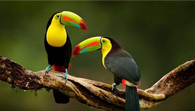
Descubre las aves de Colombia
Desde los bosques nubosos andinos hasta las riberas de los ríos amazónicos, Colombia alberga una extraordinaria concentración de hábitats. Esta guía presenta las regiones, las especies y las historias de conservación dirigidas a estudiantes, viajeros y observadores de aves.
Regiones naturales
Desde la Amazonía hasta la Región Insular, explora las seis regiones naturales de Colombia y descubre las especies que hacen del país el mayor refugio de aves del mundo.
La selva tropical más grande de Colombia, hogar de miles de especies de aves y una de las mayores biodiversidades del planeta.
Explora región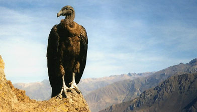
Las montañas andinas albergan una gran variedad de colibríes, cóndores y numerosas especies endémicas adaptadas a diferentes altitudes.
Explora región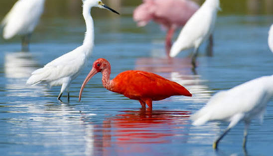
Una región de costas, manglares y humedales donde habitan flamencos, pelícanos y una amplia diversidad de aves acuáticas.
Explora región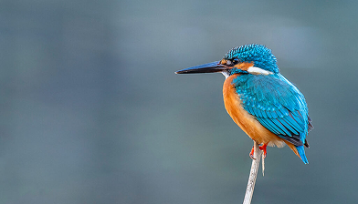
Una de las zonas con mayor biodiversidad del mundo, reconocida por sus bosques tropicales y sus coloridas especies de aves.
Explora región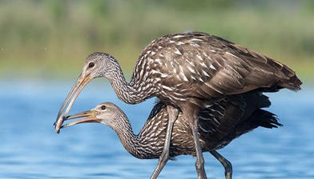
Las extensas llanuras orientales ofrecen el hábitat ideal para garzas, ibis, aves rapaces y otras especies propias de las sabanas.
Explora región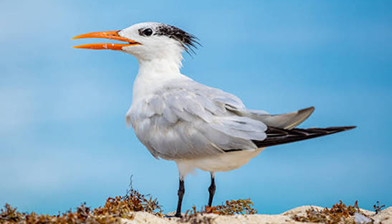
Las islas colombianas son refugio de aves marinas y especies costeras que habitan entre playas, arrecifes y aguas cristalinas.
Explora regiónEspecies
Despliega cada región para conocer sus ecosistemas, especies más representativas, hábitats, estado de conservación y datos curiosos sobre las aves que la habitan.
Tropical húmedo con altas precipitaciones durante todo el año.
Selvas tropicales, ríos, humedales y bosques inundables.
La protección de los bosques amazónicos es fundamental para conservar su extraordinaria biodiversidad.
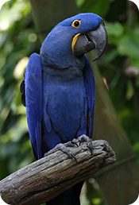
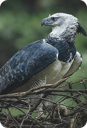
Templado y frío, con gran variación según la altitud.
Bosques andinos, páramos, montañas y valles.
Varias especies son endémicas y dependen de la conservación de los bosques altoandinos.
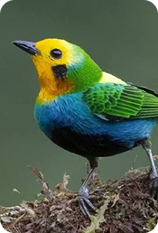
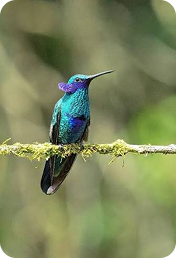
Cálido tropical con temporadas secas y lluviosas.
Manglares, playas, ciénagas, bosques secos y humedales.
Los manglares y humedales son esenciales para muchas aves migratorias.
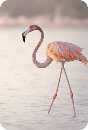
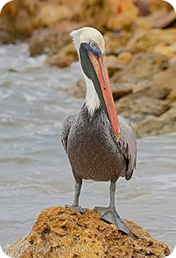
Muy húmedo, con una de las mayores precipitaciones del mundo.
Bosques tropicales, manglares y costas del océano Pacífico.
La conservación de los bosques del Chocó es clave para proteger numerosas especies endémicas.
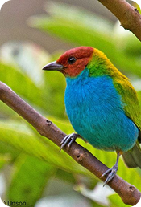
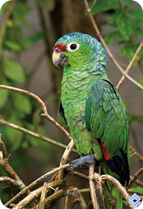
Tropical de sabana con estaciones seca y lluviosa bien definidas.
Llanuras, sabanas inundables, ríos y bosques de galería.
Los humedales y sabanas son fundamentales para la reproducción de numerosas especies.
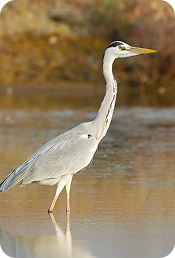
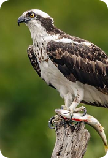
Tropical marítimo con temperaturas cálidas durante todo el año.
Arrecifes coralinos, playas, acantilados e islas oceánicas.
Los ecosistemas marinos protegidos son esenciales para la reproducción de aves costeras.
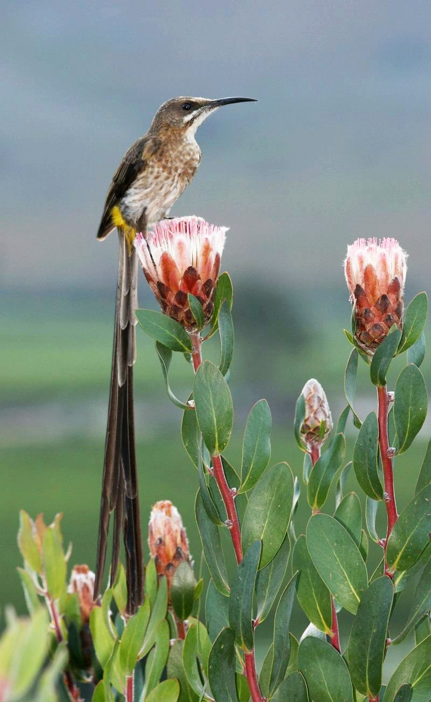
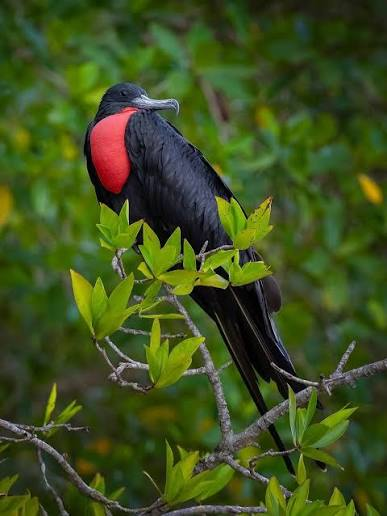
GALERIA
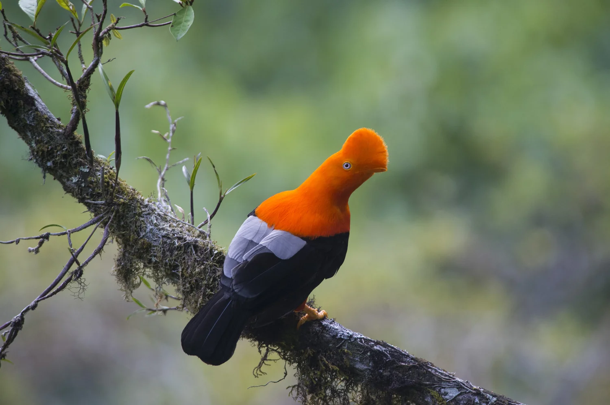
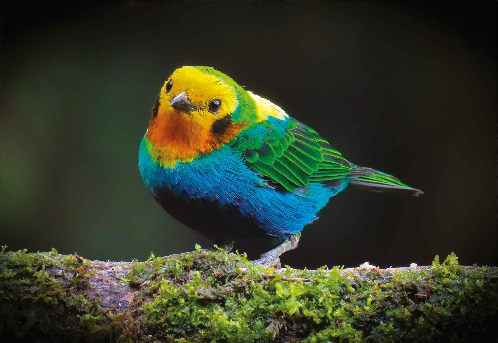